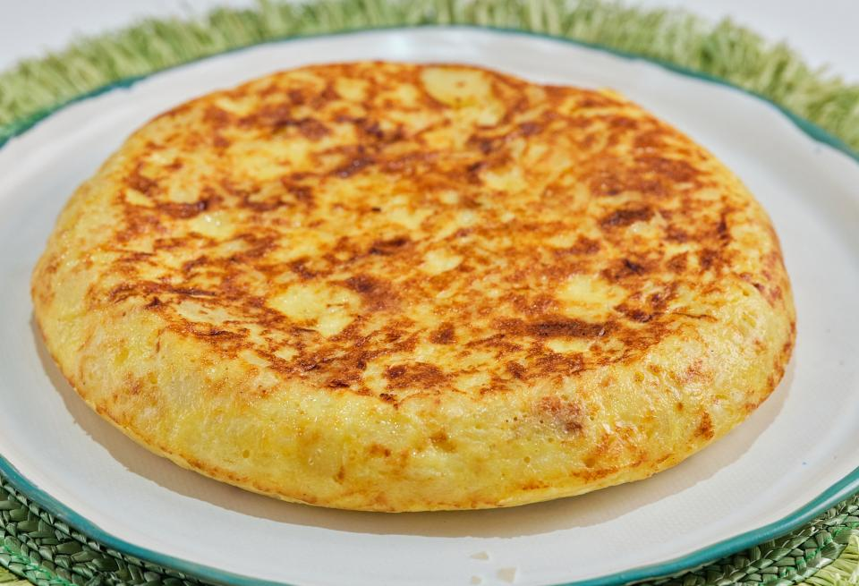

Tortilla de Patatas
Clásica receta española de tortilla de patatas, jugosa y deliciosa.

Ingredientes
- 4 patatas medianas (aprox. 600g)
- 6 huevos
- 1 cebolla (opcional)
- Aceite de oliva
- Sal
Elaboración (Pasos)
- Pelar y cortar las patatas en rodajas finas.
- Calentar abundante aceite en una sartén y añadir las patatas (y la cebolla, si se utiliza).
- Freír a fuego medio hasta que estén tiernas (unos 15-20 minutos).
- Escurrir el exceso de aceite y dejar enfriar un poco.
- Batir los huevos en un bol y añadir las patatas. Mezclar bien y sazonar con sal.
- En la misma sartén, añadir un poco de aceite y verter la mezcla de huevo y patatas.
- Cocinar a fuego medio, moviendo de vez en cuando, hasta que esté cuajada por debajo.
- Dar la vuelta con ayuda de un plato y cocinar por el otro lado hasta que esté dorada.
- Servir caliente o a temperatura ambiente.
Volver